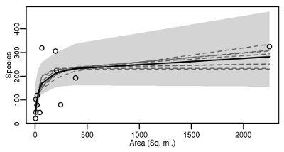

mmSAR
mmSAR is an R package for the modelling of the Species-Area Relationship (SAR).
The mmSAR package implements the multimodel SAR paradigm and provides ecologists with user friendly functions fit SAR models and calculate multimodel SAR inference.
